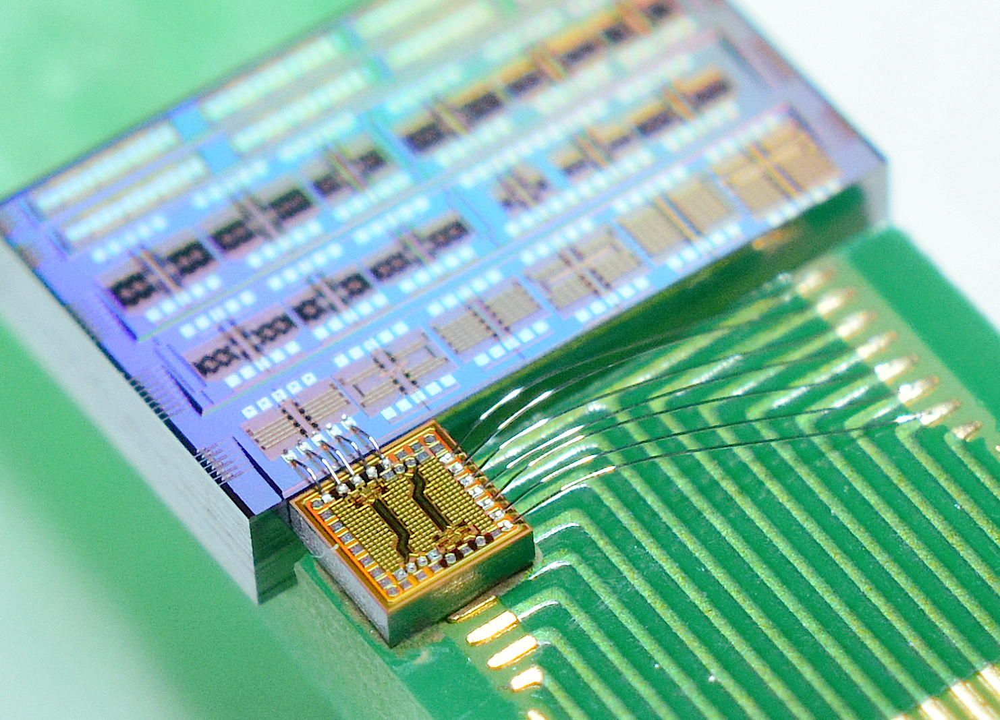
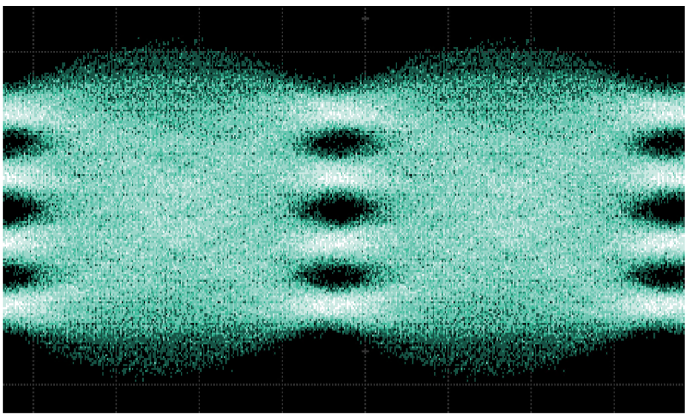

Optical Transceivers for Data Centers
Data centers supporting AI and cloud services need higher-capacity optical interconnects between servers and switches as computing scales up. Increasing capacity requires higher data rates per channel as well as compact, low-power devices for dense multichannel integration.
This research aims to develop high-speed, low-power optical transceivers through the co-design of optical modulators, which convert electrical signals into optical signals, and their electronic drivers. Combining slow light, which enhances modulation efficiency by reducing the optical group velocity, with impedance engineering of the electrodes and driver circuits has enabled a co-packaged silicon Mach–Zehnder optical transmitter with power consumption and footprint among the lowest reported for this class. Silicon modulators with built-in waveform-shaping functions conventionally implemented through digital signal processing have also been developed, demonstrating approximately 100-fold higher energy efficiency than conventional modulators and high-speed modulation at 200 Gb/s.
Current work extends these approaches to thin-film lithium niobate and compound-semiconductor EML (EA-DFB) devices, exploring device structures and circuit architectures suited to each material and modulation mechanism.

